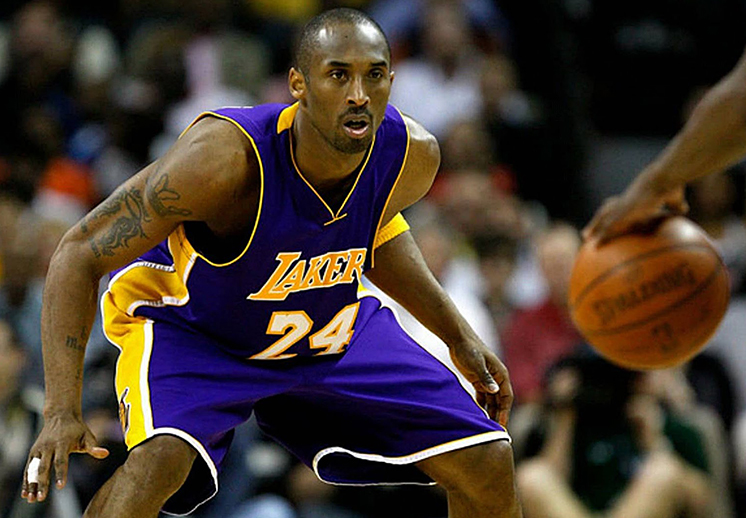
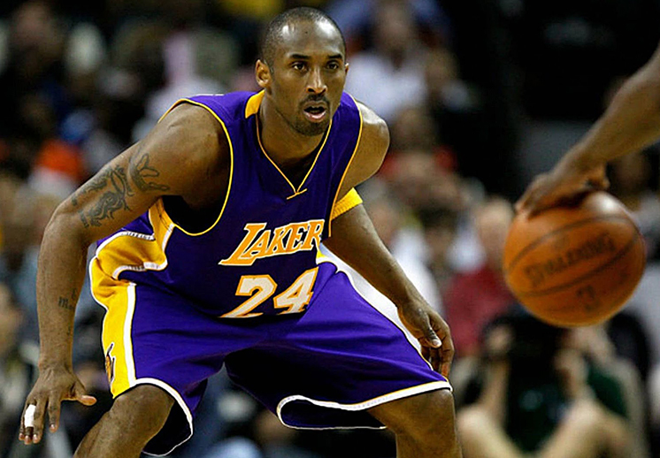

Luka Doncic se une a Los Angeles Lakers en un traspaso histórico
En un movimiento sin precedentes, los Los Angeles Lakers han adquirido al esloveno Luka Doncic de los Dallas Mavericks, mientras que Anthony Davis se une al equipo tejano.
El baloncesto fue inventado en 1891 por el canadiense James Naismith como una alternativa de invierno para mantener activos a sus alumnos.
El deporte ganó rápidamente popularidad y se expandió por las universidades y colegios norteamericanos a principios del siglo XX. En 1936, el baloncesto masculino fue introducido como deporte olímpico en los Juegos Olímpicos de Berlín. Por su parte, el baloncesto femenino se convirtió en deporte olímpico en los Juegos de Montreal 1976.
En un movimiento sin precedentes, los Los Angeles Lakers han adquirido al esloveno Luka Doncic de los Dallas Mavericks, mientras que Anthony Davis se une al equipo tejano.
La NBA ha desvelado los participantes para los concursos de mates, triples y habilidades del All-Star 2025.
 


| Jugador | Puntos por partido | Rebotes | Asistencias |
|---|---|---|---|
| LeBron James | 27.1 | 7.4 | 7.4 |
| Stephen Curry | 24.3 | 4.5 | 6.5 |
| Giannis Antetokounmpo | 29.9 | 11.5 | 5.9 |
Si tienes alguna consulta, sugerencia o simplemente quieres saber más sobre el mundo del baloncesto, no dudes en contactarnos.